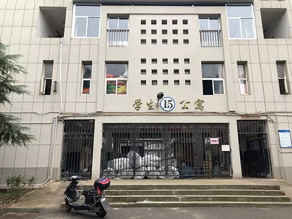

后方的老师，我隔着屏幕在抗疫
原文链接 备份链接 “ - 疫 情 之 下 - 她不会要求她的学生们将来必须成为医务工作者、科学家、警察、建筑工、老师，但她一定会要求自己的学生，好好学习，将来一定要用自己所学、所知、所拥有的知识和技能守护好那些曾经守护过他们的人。 ” …
澎湃新闻记者 汤琪 发自武汉
武汉一所市属高校，近日卷入了一场舆论风波。
2月7日中午11时许，位于武汉市东湖高新区的武汉软件工程职业学院接到紧急通知，学校需腾出1000间学生宿舍，作为新型冠状肺炎病毒（以下简称“新冠肺炎”）密切接触者的隔离点。当天，学校内部便向学生发布《告学子书》，告知需被征用的宿舍楼编号，并承诺，学生的个人物品将被妥善管理。
为防控疫情，各地高校延迟开学时间。由于仍处于假期，学校接到任务后紧急召回200余名教职工，投入到清空宿舍的工作中。
计划赶不上变化。第二天，2月8日，学校再接通知，还要再腾出1000间宿舍。在繁复的清理工作压力下，这一次，学校未能及时通知到学生。

武汉软件工程职业学院被征用的宿舍楼。本文图均为澎湃新闻记者 汤琪 图
2月9日，该校有学生在宿舍群里看到一些照片，宿舍楼天井下的空地上被扔满了各种物品，还有人正在翻学生柜子里的物品，丢在地上。一时间，各种视频和照片开始在网上疯传，矛头指向校方，认为学校“野蛮清空学生宿舍”，引发网友不满。
孙美华感到非常无奈。作为武汉软件工程职业学院副校长，接到任务后，她已经连续几天没有回家，全身心投入到宿舍清空、物资搬运的工作。“事情的真相真的不是你们在网上看到的那样。”
2月10日，在接受澎湃新闻（www.thepaper.cn）采访时，她一度有些哽咽，说不出话来。
“清空行动”
武汉软件工程职业学院并非被征用为隔离点的唯一高校。
2月7日晚，湖北省召开新型冠状病毒感染的肺炎疫情防控工作例行新闻发布会。武汉市委常委、常务副市长胡亚波表示，省、市防疫指挥部正在将省委党校、武汉市属高校改造成病房，预计增加5400个床位，用于收治轻症患者。
武汉市共有四所市属高校，包括江汉大学、武汉商学院、武汉船舶职业技术学院和武汉软件工程职业学院，已全部接到征用宿舍的通知。但已有学校表示，目前高校宿舍仅作为疑似和发热病人的隔离点，是否进一步作为确诊轻症患者的隔离病房还要视疫情发展而定。
武汉软件工程职业学院是2月7日上述11时许接到的通知，因为疫情缘故，高校至今仍未开学，原本应该熙熙攘攘的校园格外安静。
接到通知以后，校方紧急召回200余名教职工投入到清空学生宿舍、搬运物资等工作中。2月7日，学校内部向学生发布《告学子书》，告知学生，该校12、13、14、15、16栋共1000间宿舍被征用。
“同学们，请你们放心，宿舍都是老师们亲手收拾整理，你们的个人物品已被妥善保管……宿舍将由专业人员严格管理，使用完毕后会进行专业的清洁消毒，确保安全无虞。”《告学子书》写道。
第二天，2月8日，学校再接通知，要再增加1000间宿舍作为隔离点。这一次，校方未再向学生发布通告，教职工的工作量陡增。情急之下，一些看上去有些粗糙的清理行为经网络发酵，让这所高校陷入舆论风波。

宿舍楼内已经整理干净，此前网上的图片显示，这里曾堆满垃圾。
2月9日，网络上流传出该校清理宿舍的照片和视频。有照片显示，该校宿舍楼天井下的空地被扔满了学生的物品。有视频还显示，一些工作人员正在翻学生柜子里的物品，然后随意丢在地上。更有学生反映，自己并未接到学校通知，认为自己的私人物品未得到应有的尊重。
一时间，各种视频和照片开始在网上疯传，矛头指向校方，引发网友不满。
2月10日凌晨1时许，武汉软件工程职业学院团委的官方微博就此事件发布了一则致歉信，信中写道，“在整理过程中确实出现个别人员为赶进度，整理不细致、处置不当的情况。在此，学校深表歉意，同时郑重承诺，所有同学物品若有损失，开学后学校将在核实的基础上予以赔偿（补偿）。”
副校长的委屈和教职工的付出
武汉软件工程职业学院副校长孙美华2月9日下午了解到舆情时，感到心力憔悴。
接到改造隔离点的任务后，她已经连续几天没有回家，全身心投入到宿舍清空、物资搬运的工作中，有时半夜两三点还在宿舍楼坚守，对接物资。
“我们前期确实没有和学生进行详尽的沟通，实在没有时间。”2月10日下午，孙美华接受澎湃新闻采访时表示，当天上午，老师们已经一对一打电话给宿舍被征用的学生，并说明了情况。“希望他们相信老师，学生们的贵重物品、有情感记忆的物品都会为他们安置好。”
在被征用前，该校的学生宿舍几乎满员。
据孙美华介绍，他们在清理工作前已将所有的学生物品分为三类：一类是日常用品，比如被褥、洗漱用品等，都用被子卷好放好；另一类是贵重物品，比如电脑，老师们都进行了登记，集中放置在指定宿舍锁好；最后一类是有纪念价值的物品，比如获奖证书、明信片等，校方要求老师们尽量关注到，并妥善保管。

校方提供的学生物品归类说明
根据校方提供的多份归类说明文档，澎湃新闻注意到，被征用的宿舍楼内，每层都会选取一部分房间作为仓库，专门用于放置其他被清空宿舍的学生物品，并标记清相对应的宿舍编号。
“我们的学校没有生活区，前来支援的200多名教职工分散居住在武汉三镇，有的人想来帮忙，但因为没有车不方便。”孙美华坦言，由于学校的女性职工居多，清理宿舍、搬运物资又都是力气活，好多老师都是克服重重困难而来，只为尽快把宿舍清空交付。
2月10日下午，澎湃新闻实地探访武汉软件工程职业学院被征用的宿舍楼，此前网上流传的照片中堆满垃圾的宿舍楼大厅已经清理干净。在一间间宿舍内，校方为即将入住的隔离人员准备了脸盆、毛巾、卫生纸等生活用品，一些学生的拖鞋、被褥等物品都塞进他们的柜子里，等待封存。

学校为即将入住隔离点的人员提供生活物品
参与清理工作的武汉软件工程职业学院机械工程学院院长王忠林告诉澎湃新闻，网上一些照片看上去像是学生的物品被当成垃圾扔在地上，但实际上是在清理过程中，确实有许多废纸盒、空瓶子等是学生还来不及扔掉的垃圾，有用的物品是绝对不会乱扔。
王忠林承认，因为宿舍楼有六层之高，没有电梯，为了和时间赛跑，在保证楼下无人的情况下，确实存在把成袋的垃圾从楼上直接扔下的情况，导致照片中的观感不佳，但事后已经全部清理，这其中绝不会有学生的贵重用品。
“我们把能找来的人都找来帮忙了，其中还有50多岁的老教授，他们都趴在地上把学生床下的垃圾清理出来，把厕所反复用拖把拖干净。”王忠林直言，网上偏激的言论让老师们感到有些寒心。
“事情的真相真的不完全是网上看到的那样，疫情过后，我们依然要面对的是我们的学生，学校能够不爱自己的学生吗？”孙美华在接受采访时一度哽咽，双眼里的血丝和泪水都清晰可见。
静待隔离人员入住
尽管有委屈，但2月10日凌晨1时许，武汉软件工程职业学院团委官方微博还是主动就此事件发布了一则致歉信。
信中写道，“在整理过程中确实出现个别人员为赶进度，整理不细致、处置不当的情况。在此，学校深表歉意，同时郑重承诺，所有同学物品若有损失，开学后学校将在核实的基础上予以赔偿（补偿）。”
这场风波在不少武汉人的微信群里疯传，诸如“学子们注意，不要报考这所学校”的言论也影响到了在该校工作人员刘静（化名）的心情。这两天，她收到不少学生发来的信息，他们都出于关心，向学校老师表示了安慰。
2月10日下午，刘静看到工作群里有老师还在发他们翻垃圾的视频。她告诉澎湃新闻，老师们还想看看有没有不小心扔掉的有用物品，但翻来翻去，全都是垃圾。
也有学校老师在微博上发布了他们清理学生宿舍的经过——能整理到柜子里的物品就绝不放外面，能放外面的也用盒子一个个打包，就连一些未使用的一次性筷子都没有扔，连一幅张贴在柜子上的易烊千玺的海报，老师都小心撕下来，卷起后放到了柜子里。

一部分的学生物品被塞进柜子里，等待封存。
“灾情来临的时候，每个人的反应都不同，有时候温暖人的，都是那些不计较的付出。”刘静感慨，老师们的付出都问心无愧，他们不顾安危连续奋战好几个昼夜，才应是焦点。
如今，用以征用的宿舍楼回归了平静，等待着即将入住的隔离人员。那时，宿舍也将交给专业人士管理。
同样是清空宿舍，为何武汉软件工程职业学院成为众矢之的？
“可能是我们把孩子们不要的废纸盒子等垃圾都清出来了吧，要是我们不管这些，也是可以的，但那是对学生的不负责任。”王忠林再复盘这一切时，如是说道。
（实习生夏梦洁、孟津津、张浩容、闫彩琪亦对此文有贡献）
戳这里进入
“全国新型冠状病毒感染病例实时地图”↓↓↓

本期编辑 周玉华
推荐阅读


原文链接 备份链接 “ - 疫 情 之 下 - 她不会要求她的学生们将来必须成为医务工作者、科学家、警察、建筑工、老师，但她一定会要求自己的学生，好好学习，将来一定要用自己所学、所知、所拥有的知识和技能守护好那些曾经守护过他们的人。 ” …
原文链接 备份链接 此前，这里被丢满了学生们的盒子、袋子等物品，现在已经清理干净。（王伟凯/摄） 全文共2865字，阅读大约需要7分钟。 武软的学生宿舍大都没有电梯，如果将物资统一搬运到楼下，时间和人力上都无法保障。于是，学校个别教职 …
原文链接 备份链接 当社会规则的制定者不作为的时候，普通人别无选择，“幸运”的人躲过一劫，只从人性百态里掠了个影；而“不幸”的人却只能自面生死。武汉肺炎等事情不使人绝望，真正使人绝望的是这些看似由于客观因素所导致的不幸里面，大多数是本可以 …
原文链接 备份链接 经济观察网 记者 万敏 准备好教案，调试好QQ，等待开课——林老师从来没想到，会以这样的方式，带领学生向着高考冲刺。 林老师是湖北省武汉市一所重点中学的高三年级任课老师、班主任。从1月30日（农历正月初六）开始，她和其 …
原文链接 备份链接 非常时期，武汉成了全国人民挂念、祈福的城市。封城后，武汉人民的真实生活是什么样？ 正和岛自1月26日起特别推出《叶青：我在武汉疫区的第N天》专栏。叶青是一位定居武汉40年的市民，也是一名学者和官员。接下来的一段时间，他 …